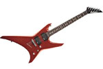

hmm, i'm curious about line 6 variax guitars, theres one second hand in a local shop for 280, i'm wondering if it's worth buying, so what is your opinion about them?
Nope. Never heard of them. I have a Jackson JS20WR, does exactly what I want from it.

hmm, i'm curious about line 6 variax guitars, theres one second hand in a local shop for 280, i'm wondering if it's worth buying, so what is your opinion about them?
My opinion is: Go into the shop and play the sucker. If it feels right, buy it. If you're worried about technical stuff, or whether the sound it produces will suit your style, then read up and educate yourself beforehand.
yeah, i played it but the people in the store had placed the external power supply for it behind a load of congas and couldn't get to it, was still good to play but i couldn't hear it >.<
@borealis - Line 6 variax is a guitar that digitally creates tones similar to all the classic guitars like the Les Paul '56 goldtop and Rickenbacker 360/12, and lots of other stuff like banjo, electric sitar.
@borealis - Line 6 variax is a guitar that digitally creates tones similar to all the classic guitars like the Les Paul '56 goldtop and Rickenbacker 360/12, and lots of other stuff like banjo, electric sitar.
Yeah well. It depends what you want it for, obviously. That's quite a good price, though.